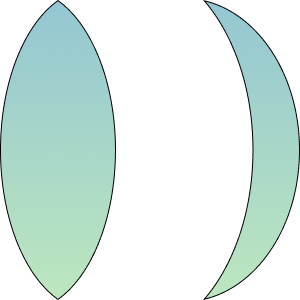
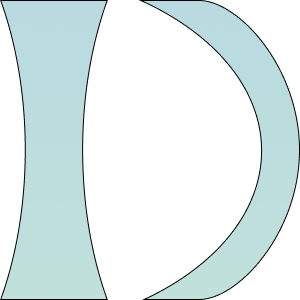

La lentille convexe est un composant optique couramment utilisé,
caractérisé par sa forme bombée. Elle converge la lumière qui la
traverse, focalisant les rayons par le biais de sa surface courbe
vers un point focal.
Cette capacité de concentration de la lumière en fait un élément
essentiel dans divers domaines, tels que l'optique médicale pour
les lunettes de vue et les lentilles de contact, ainsi que dans
les dispositifs optiques tels que les loupes et les télescopes.
La lentille convexe produit des images virtuelles agrandies et est
cruciale pour corriger la vision dans les cas de défauts oculaires
comme la presbytie.
La lentille concave est un élément optique avec une surface
incurvée vers l'intérieur. Contrairement à la lentille convexe,
elle diverge les rayons lumineux qui la traversent, les éloignant
de son axe principal.
Cette propriété en fait un composant essentiel pour la correction
de la vision dans les cas de myopie. Elle est également utilisée
dans divers dispositifs optiques, tels que les lunettes de
plongée, pour compenser la vision floue à proximité.
La lentille concave joue un rôle important dans la manipulation
des rayons lumineux, produisant des images virtuelles plus petites
et contribuant à une vision nette.
